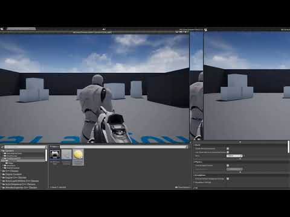

Experience
A first-person networking example that integrates Unreal Engine with Haxe and demonstrates a small replicated multiplayer setup.

Description
The repository uses the Unreal first-person template as the starting point for an unreal.hx integration. Its documented versions are Unreal Engine 4.22.3 and Haxe 4.0.0, with native build tools used by the Haxe integration.
The setup instructions demonstrate launching a dedicated server with three player instances in the editor. That makes the entry a networking and language-integration project. The saved source does not establish a finished battle-royale game, a shrinking arena, or a hosted public matchmaking service.
Detailed features
Unreal and Haxe integration
The project combines an Unreal first-person template with the unreal.hx plugin and Haxe tooling. This is the implementation focus described in the repository.
Replication example
The documented workflow starts a dedicated server and three player instances. It provides a concrete context for inspecting networked player behavior rather than implying an available online service.
Native build configuration
The source records compiler and platform setup issues encountered on macOS. Those build requirements are part of the project and matter when restoring the actual code.
Build summary
The documented stack is Unreal Engine 4.22.3, Haxe 4.0.0, hxcpp, hxcs, and unreal.hx. The dedicated-server example is an editor workflow. A browser-compatible or publicly hosted multiplayer build has not been established.
- Technology
- Unreal Engine
- Scope
- Unreal project
- Presentation
- 1080p footage unavailable
Implementation examples
BP_HaxeCharacter.uassetBP_HaxeGameMode.uassetBP_HaxeGameState.uassetBP_HaxeHUD.uassetBP_HaxeProjectile.uassetWBP_DeathScreen.uasset
Feature video
1080p project video unavailable
A verified recording of this project at the requested resolution has not been published.